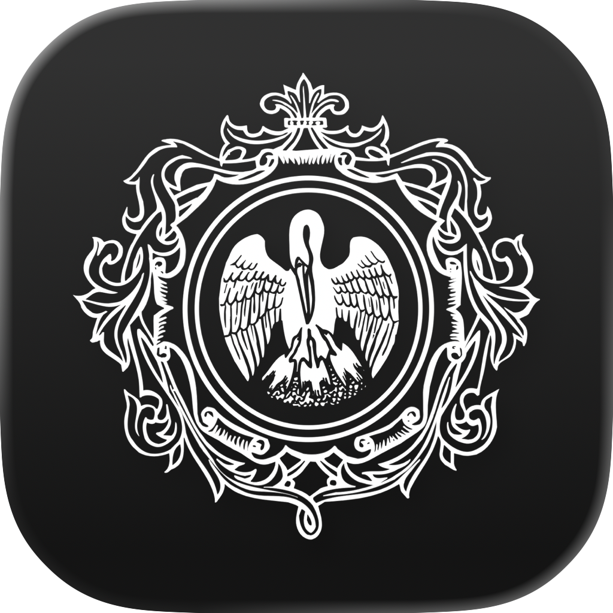
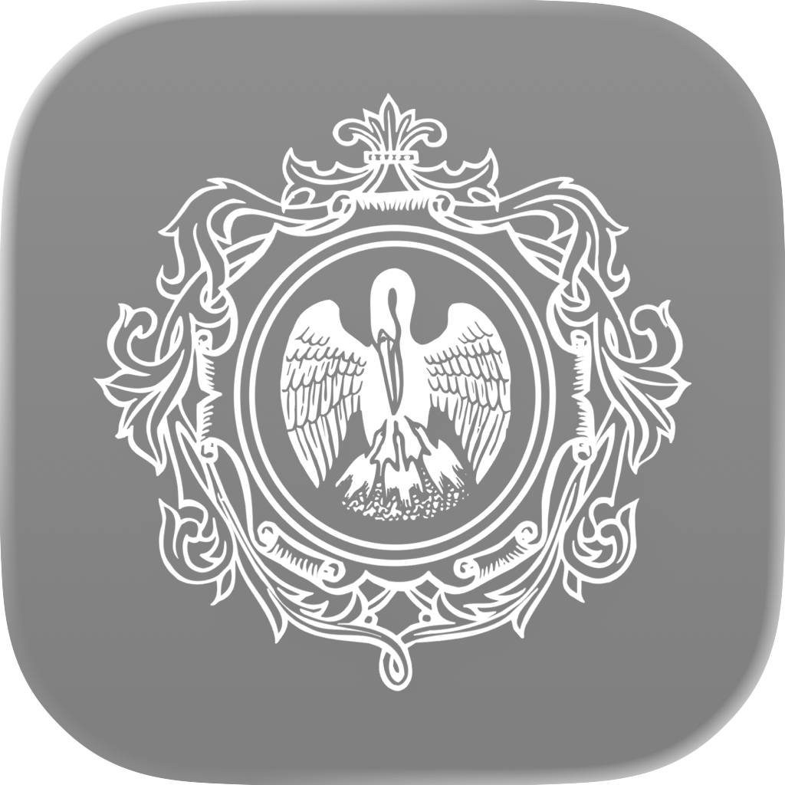
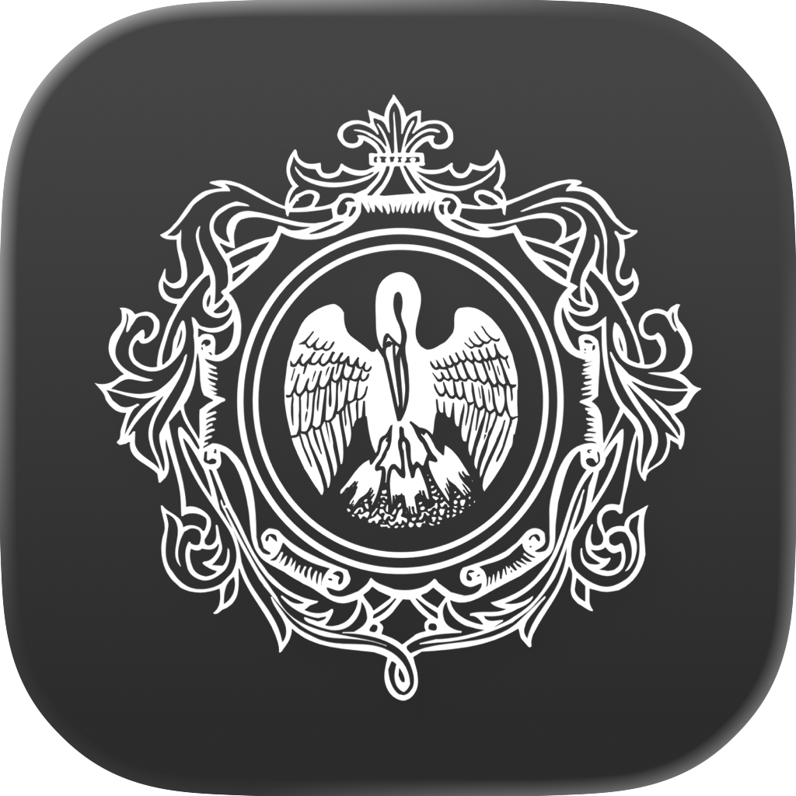
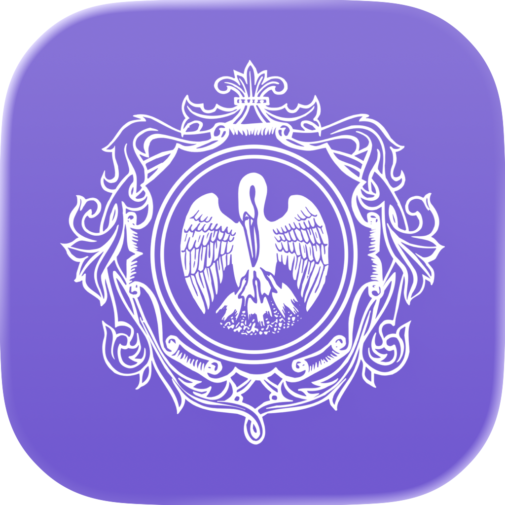
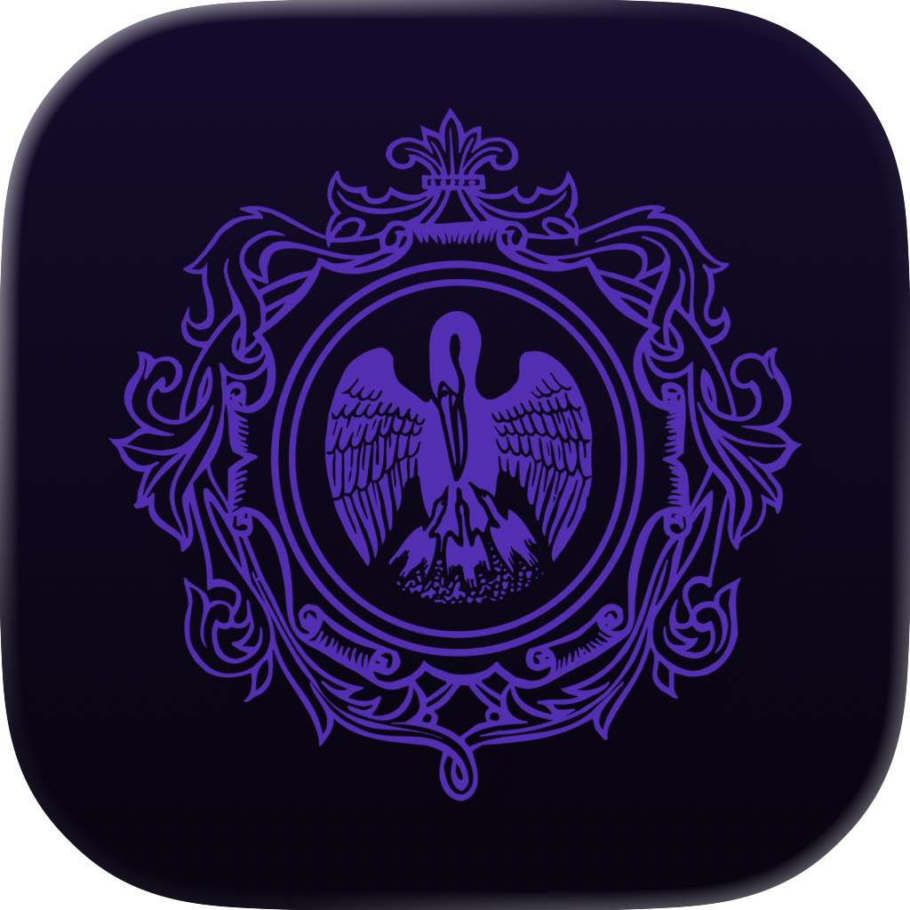

МОЙ ГЕРЦЕНА / APP ICON
Экспорт сохранённого документа Icon Composer. Светлые и тёмные варианты показаны попарно: стандартные, прозрачные и тонированные.
Default
Dark

ClearLight

ClearDark

TintedLight

TintedDark
